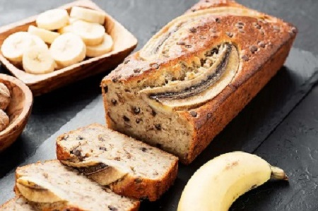

Chlebek bananowy to doskonała propozycja na pyszne i zdrowe ciasto. Chlebek jest świetnym pomysłem na wykorzystanie przejrzałych bananów. Koniecznie wypróbuj nasz przepis.
Banany rozgnieć widelcem.
Do miski wbij jajka, dodaj banany i zmiksuj.
Przesiej mąkę orkiszową, dodaj proszek do pieczenia i kakao, wymieszaj.
Posiekaj orzechy włoskie, dodaj do ciasta, wlej olej i dodaj jogurt naturalny, wymieszaj do połączenia składników.
Formę do keksa wyłóż papierem do pieczenia i wlej ciasto.
Piecz w nagrzanym do 180 stopni C piekarniku przez 45 minut.
Chlebek wyjmij z formy i wystudź przed pokrojeniem.